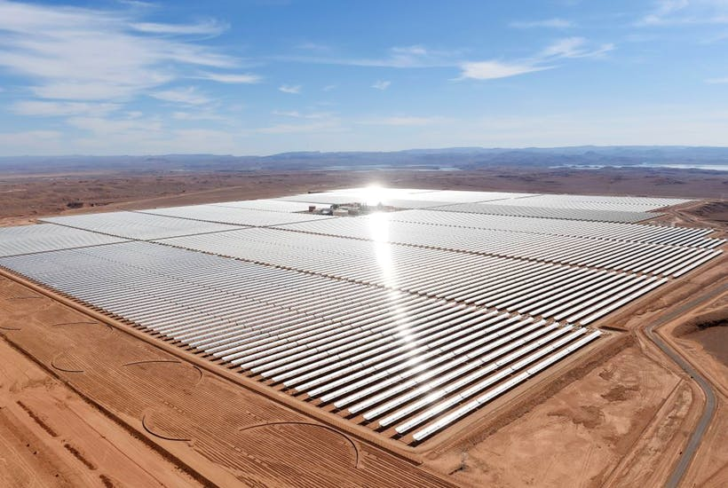
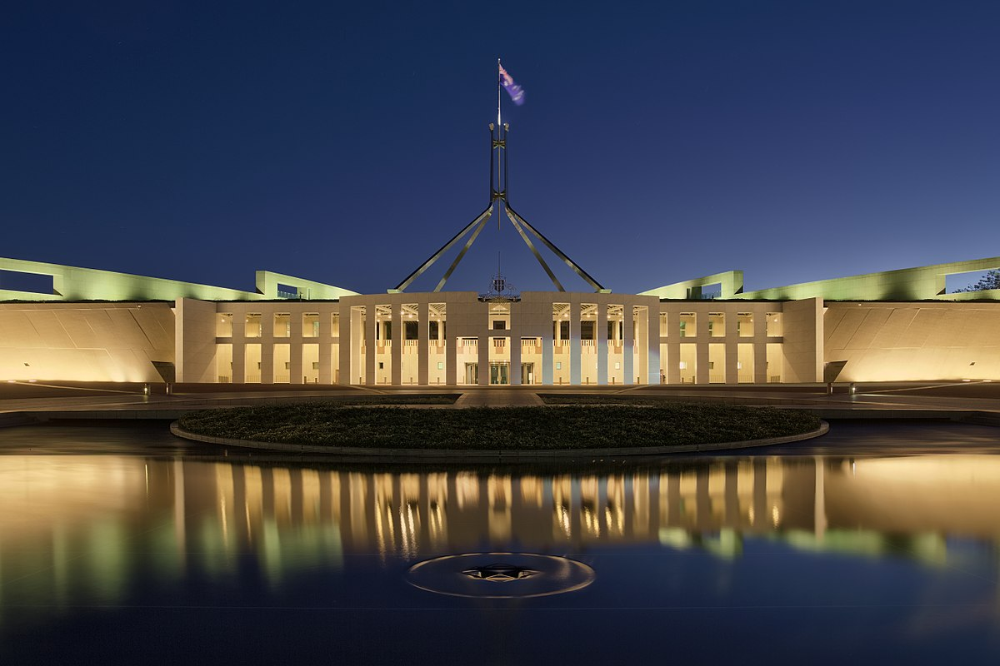

Portal
"Access all major government services here"
Here you can access your government services that are needed from this page.
You are currently on this page.Department of Defence
"The primary role of Defence is to defend Australia against any physical threat to our safety or wellbeing."
The Australian Government Department of Defence aims to promote the security of Australia, and to protect its people and its national interests.
Click here to go to the Department of Defence.Department of Enviroment & Energy
"We design and implement Australian Government policy and programs to protect and conserve the enviroment, water and heritage, promote climate action, and provide an adequate, reliable and affordable energy."
The Department of Enviroment & Energy is responsible for producing anual reports on various enviromental issues. On this page you can also find the power grid usage.
Click here to go to the Department of Enviroment & Energy.Department of Communication & The Arts

"We foster an enviroment in which all Australians benefit from access to diverse communications services and cultural expriences."
The Department of Communication & The Arts looks after Australia's technological infrastructure. Additionally, they are also in charge of ensuring unbiased media and applying ratings to various forms of media. On this page you can also view a heatmap of the current network status.
Click here to go to the Department of Communication & The Arts.Department of Human Services
"We look after the welfare of all Australians and provide support in many various ways."
The Department of Human Services looks after the Australian people in various forms. They oversee Medicare, Centerlink and Child Support. On this page you can view your private personal medical record that are kept on file.
Click here to go to the Department of Human Services.Parliament House
"Parliament House is home to Australian Politics."
Parliament make laws, authorises the Goverment to spend public money, scrutinises government activites, and is a form for debate on national issues. You can view election information on this page. You can also vote in the ongoing election here.
Click here to go to Parliament House.